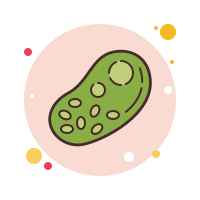
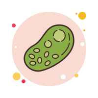

| ¿Qué es el reino fungi? |
|---|
|
El reino fungi es uno de los grupos en que la biología clasifica a las formas de vida conocida.
Está compuesto por más de 144.000 especies diferentes de hongos entre los que figuran las levaduras, los mohos y las setas,
y que comparten características fundamentales como la inmovilidad, la alimentación heterótrofa y ciertas estructuras celulares.
Los hongos existen a lo largo y ancho del mundo y en distintos hábitats, apareciendo en distintas formas y presentaciones:
la idea tradicional que tenemos de ellos es la seta, con capuchón y cuerpo blanco alargado, pero esa es apenas una de las numerosas especies conocidas dentro del reino fungi.
|
| CARACTERÍSTICAS |
Los miembros del reino fungi comparten las siguientes características fundamentales:
- Carecen de movilidad propia.Los hongos crecen en el suelo, en las superficies, o sobre troncos o materia orgánica en descomposición,
dependiendo de sus preferencias, pero así como las plantas, se mantienen toda su vida en el mismo lugar, incapaces de moverse a voluntad.
- Poseen pared celular.Las células de los hongos son eucariotas, es decir, con núcleo celular definido, y poseen una pared celular rígida, semejante a la de las células vegetales, pero en lugar de estar compuesta de celulosa, en los hongos está compuesta de quitina, la misma sustancia que otorga a los insectos la dureza de sus exoesqueletos.
Además, son células alargadas y que pueden contener varios núcleos, poseen vacuolas pero no cloroplastos, pues no hacen fotosíntesis.
- Crecen como hifas.El crecimiento de los hongos se produce a manera de hifas, estructuras cilíndricas y uniformes que pueden ir de los pocos micrómetros a los varios centímetros de longitud, pudiendo superponerse en un proceso de ramificación o bifurcación.
|
| CLASIFICACIÓN |
|---|
HONGOS
La clasificación de los hongos se ha reelaborado a lo largo de la historia de la biología,
a medida que se desarrollan mejores técnicas de reconocimiento y se distinguen a los hongos de otras formas de vida protistas y cromistas que se les asemejan.
La clasificación actual del reino es la siguiente:
- Hongos basidiomicetos (Basidiomycota).Aquellos que desarrollan setas (basidicarpos), de las cuales nacen las esporas reproductivas del hongo.
- Hongos ascomicetos (Ascomycota).Aquellos que en lugar de setas tienen ascas, células sexuales productoras de esporas.
- Hongos glomeromicetos (Glomeromycota).Micorrizas, o sea, uniones simbióticas entre un hongo y las raíces de una planta,
en la que el primero otorga nutrientes y agua, y las segundas carbohidratos y vitaminas que no puede sintetizar.
- Hongos zigomicetos (Zygomycota).Mohos que forman zigosporas, es decir,
esporas capaces de soportar condiciones adversas durante mucho tiempo hasta que finalmente puedan germinar.
- Hongos quitridiomicetos (Chytridiomycota).Aquellos hongos microscópicos y primitivos, generalmente acuáticos, que se reproducen por esporas flageladas (zoosporas).
|

 
